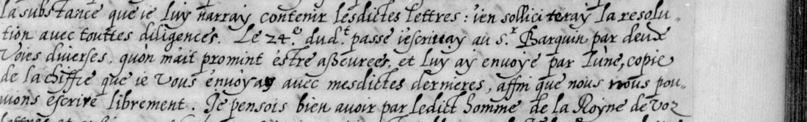

01 Two letters, three witnesses
| Document | Images | Cipher evidence |
|---|---|---|
| No. 30, Prague, 2 March 1577; opening on manuscript fol. 62 | Gallica views 63–66 | 29 draft insertions, 834 written digits |
| No. 37, Breslau / Wratislavie, 2 May 1577; fol. 75 | Views 77–78 | Two spans around clear plusieurs, 77 draft digits |
| No. 38, another copy of the May letter; fol. 76 | Views 78–79 | A second cipher witness, without a clear decipherment |
The left side of view 65 repeats the lower portion of view 64 and is not counted twice. The May witnesses substantially repeat the same figures; apparent 53/35 and 13/14 differences remain unresolved. The repository’s inherited folder name, labbe1582, does not give the letters’ date.
The run-by-run inventory records image references, adjacent clear text and draft digits. Its 31 records are transcription aids. Their boundaries do not establish whether the cipher uses single digits, pairs, mixed units, syllables or word codes.
02 Prague: a cipher sent in February
The clear prose concerns imperial-court and Polish affairs, alongside l’Abbé’s correspondence with Nevers. Two details correct the earlier local outline: the opening describes l’Abbé’s own fever and nineteen days confined to his room; view 66 mentions 200,000 talers each year for the stated years for the Hungarian frontier. The full clear-text outline remains provisional and is not a diplomatic edition.
On view 63, l’Abbé describes a recent cipher dispatch. The passage is in clear:
Le 24e dudict passé j’escrivay au Sr Barquin [name provisional] par deux voies diverses […] et luy ay envoyé par l’une, copie de la chiffre que je vous envoyay avec mesdictes dernieres, affin que nous nous pouvions escrire librement.
In substance: on the 24th of the previous month he wrote by two different routes and sent, by one of them, a copy of the cipher previously sent to Nevers, so that they could correspond freely. From the letter’s date this means 24 February 1577. Par l’une refers to one of the routes. The passage reports a dispatch; it does not establish that an enclosure survives or that both target letters use that exact cipher.

A catalogue mirror identifies an earlier letter, BnF français 4695 no. 51, Prague, 5 February 1577, and another of 20 April as no. 55. These provide a specific correspondence trail to inspect. The volume also contains Gaspar Barchino’s letter of 8 August 1575 as no. 25; a connection with the provisionally read name Barquin is only a hypothesis. The earlier letter’s text, enclosures, folio and image number have not been checked: new Gallica requests failed during this attempt.
03 Breslau: a duplicate, without plaintext

The May letter’s clear prose concerns Nevers’s financial and legal business and a change of office at the imperial court. In the provisional reading, Weber has relinquished office before the emperor’s departure on 27 April, and Vieheuser has taken his place. The cipher follows a reference to Weber’s intention to attend the court for another two years. That context has not supplied its plaintext.
The French word plusieurs is written in clear between the two numerical spans. Both copies retain the cipher, so comparing them helps with figures but supplies no independent decipherment. The working transcription of the clear prose and comparison of the cipher witnesses retain their uncertainties.
04 What was tested
The draft transcription was extended from cached scans to every March insertion found. Solvers then tried different divisions of the digits into units, and possible nulls, scored with a language model of French letters. The cipher system is not determined.
- Division into one- and two-digit units by a fixed prefix rule, then constrained substitution searches. A first unrestricted homophonic search converged on repeated letters and was discarded.
- A sweep over ways of dividing the digits into units: 1,566 divisions passed filters on the number of distinct units and on leftover digits, and each was searched with three restarts of 5,000 proposals.
- Six fixed-pair variants and further point-delimited pairing/null treatments, including hypotheses about terminal sixes.
- A search on the May spans alone with a 5-gram language model, keeping the clear plusieurs and imposing the cribs mais…jamais and ne/ni. The cribs did not extend to coherent text, and none of their values is accepted.
On a synthetic pair-substitution control the solver recovered all 538 letters. This tests the program only; it does not show that the historical cipher is of that type. An earlier attempt in this project reported a mismatch with the June 1580 “Chifre avec Madame”; the cached 1584 Nevers symbolic alphabet inspected here likewise supplied no numerical table for these letters. Neither comparison excludes every possible Nevers key.
The experiment record identifies frozen inputs, programs, outputs and the corrected May test. French-looking fragments of solver output were not accepted as plaintext. Failures on an uncertain transcription do not show that the cipher cannot be broken.
05 What remains open
No cipher insertion is deciphered. No plaintext at grade H or C is claimed. The transcription retains an obscured [?] at run f64r08, uncertain figures and unresolved joins; no token-level completeness percentage is available. The March and May clear-text files are provisional, with doubtful names and expressions still requiring an editorial pass. Barquin is a tentative (M-grade) name reading; its identification with Barchino is unproved.
The best next evidence would be the February correspondence or a surviving cipher enclosure, especially around français 4695 no. 51. Restored digital access or another copy is needed to inspect that lead. There is no verified DECODE record to update, no named key to connect in the key web, and no deciphering replay to show. The destination is known only broadly as France, so no city has been guessed for the atlas.
06 Sources and research record
- BnF français 3198, Gallica: view 63, 64, 65, 66, 77, and 79. Images inspected from locally cached copies.
- Earlier-letter lead: catalogue mirror for BnF français 4695; original Gallica volume. Catalogue evidence only; the relevant images remain unchecked.
- Prior comparison: BnF français 3995, fol. 1, June 1580 cipher. The local reassessment distinguishes the earlier comparison from the renewed tests.
Draft inventory, provisional clear readings, source code, unsuccessful outputs, control and fixed-field profile: repository folder. The reassessment supersedes the earlier research conclusions.